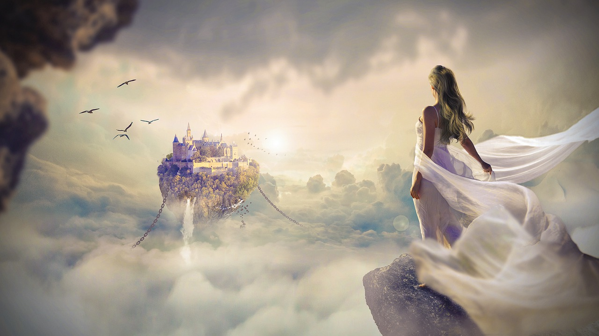
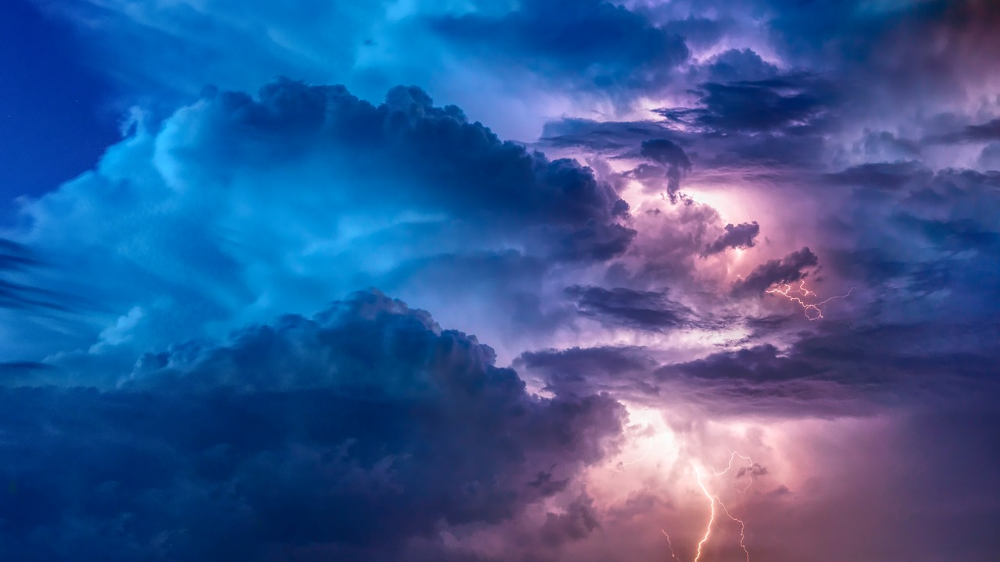
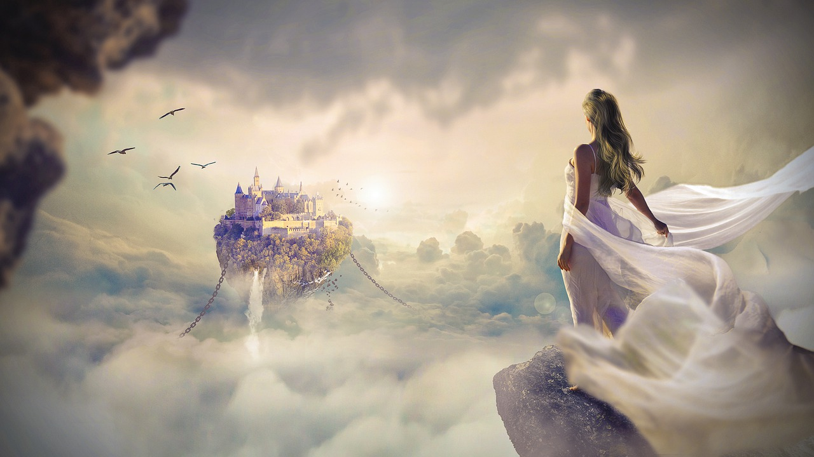
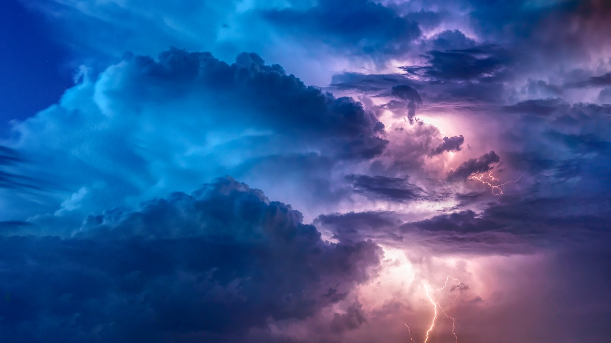
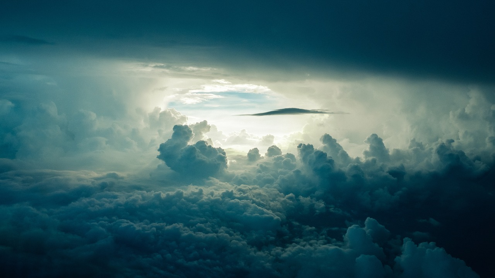
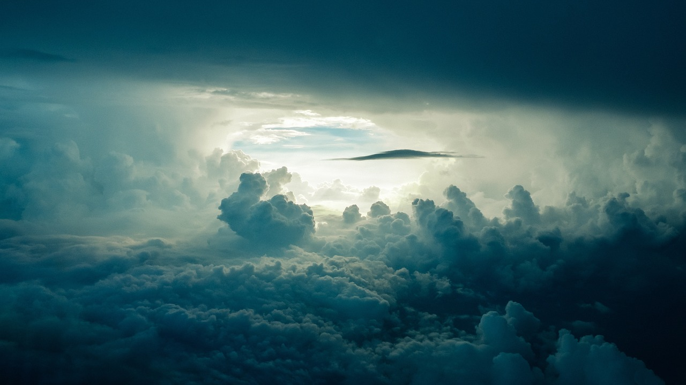

"I have lost the ability to dream of the universe."
"I have lost the ability to dream of the universe." Before reaching adulthood, I could see in my dreams cosmic wonders that defied description—like spinning galaxies visible just by looking up, or the thrill of floating into the depths of space under the overwhelming pull of a massive planet’s unbalanced gravity. I would even dream of being pulled from one bubble universe into another, with such vividness that I could feel the dizziness lingering in my waking life. I still remember a day from my childhood in the mountains when a blue comet streaked across the night sky. The meteor it shed fell slowly, gently, emitting a soft blue glow as it passed through the atmosphere. Then it descended toward me, passing through my body with warmth. When I awoke, I realized that it had become a part of my flesh. “Everett’s Notes” represents my attempt to rediscover the dreams of the cosmos. I am revisiting the fantasies of my childhood—imagining beings of immense scale, existing in the vastness of space. I believe that interstellar dust might be a form of biological remnants, and that the ephemeral creatures in the night sky could reveal the possibilities of a multiverse, delicate like the meteorite that once passed through me. The cave is an eternal night, a place where encounters of the third kind might occur. I once witnessed an unidentifiable flying object descend in the wilderness; it shifted shapes in the air and moved across the night sky without making a sound. In the cave, I saw the same blue glow as the meteorite. I know that “someone” lives here. And that comet, the one that shed the meteorite—I spent much time searching for other traces of its fall to Earth. Countless nights, I observed the sky, hoping to catch a glimpse of the universe’s hidden secrets. I am not the only one. I believe that “I” am not alone.
 



 
